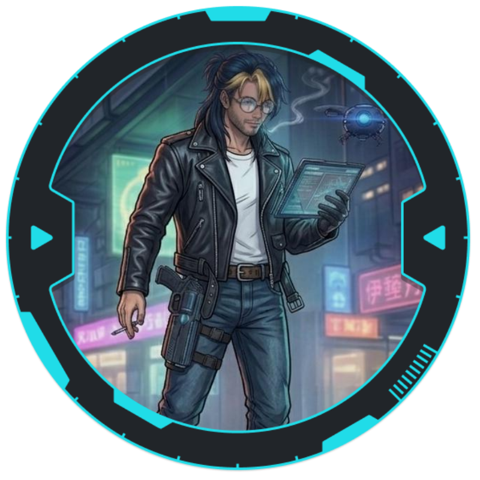

Keven

História
Não sabemos a história, apenas que a vida foi exclusivamente ruim com ele.
Armas e Armaduras
- Espingarda (4) - 98 Balotes Espingarda
- Pistola Pesada (8) - 30 Munições Pistola P
- Bastão de Atordoamento (Arma Branca Média)
- Escudo a Prova de Balas (10 / 10)
- Jaqueta Blindada Leve Corpo (10 / 11)
- Jaqueta Blindada Leve Cabeça (11 / 11)
Cyberwares e Programas
- Coldre Oculto
- Bolso Subdérmico
Equipamentos
- Agente
- Lanterna
- Algemas (2)
- Sinalizador de Estradas (10)
- Rádio Comunicador
- Rações (5)